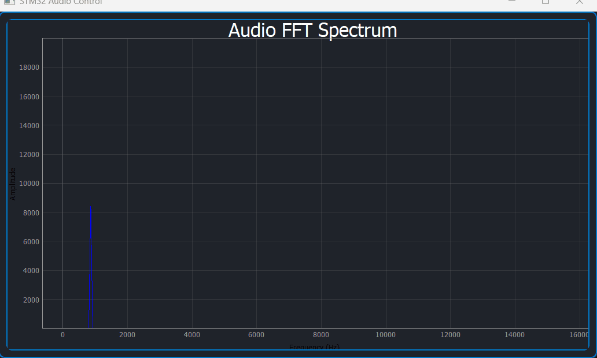
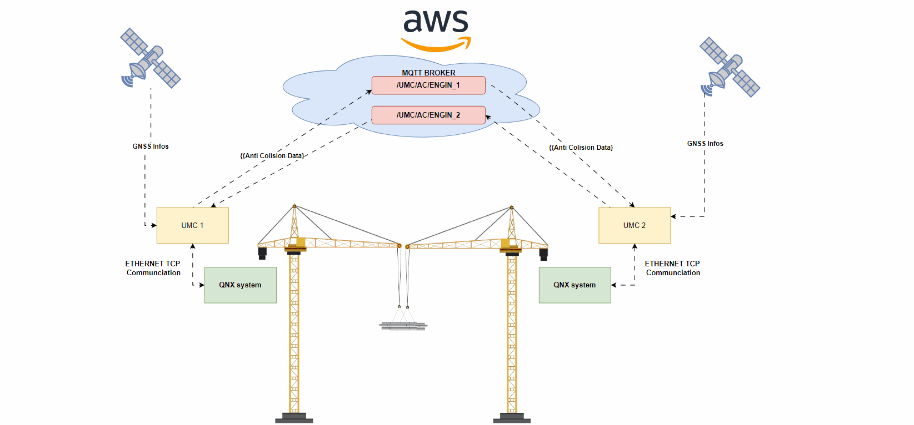
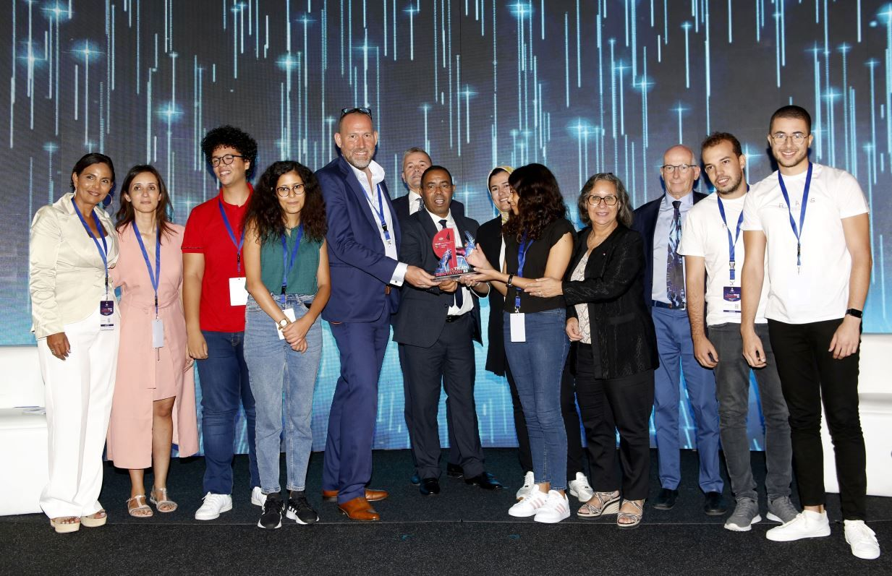
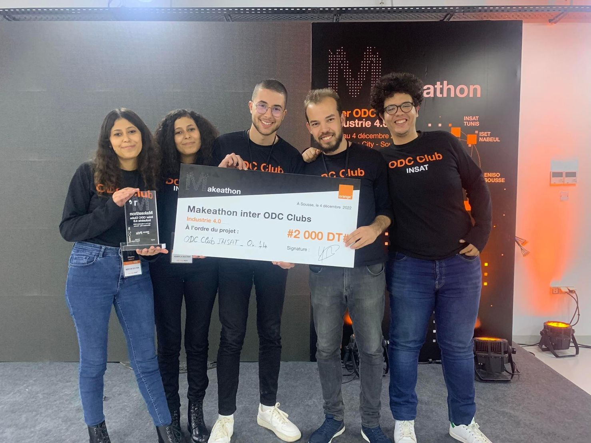
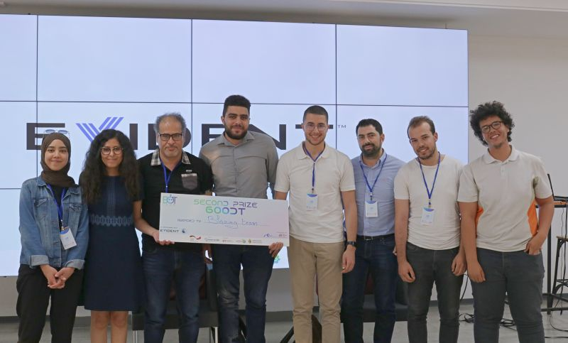

Featured Projects


Ethernet Audio Streaming Client
RTSP/RTP implementation on TCP/UDP (LwIP) on STM32H750B with producer-consumer architecture using FreeRTOS.
Embedded software development spanning RTOS, embedded Linux, low-level protocol design- 3 years of hands-on engineering
Embedded Software Engineer with 3 years of hands-on experience designing real-time and Linux-based embedded systems for safety-critical applications. Proficient in C/C++, QNX RTOS, FreeRTOS, and Embedded Linux, with expertise across ARM Cortex-M4/M7 and Cortex-A7 architectures on STM32, STM32MP1, and i.MX platforms.
At ACTIA Engineering Services, I've engineered production systems spanning real-time QNX RTOS pipelines, Wi-Fi HaLow and LTE/TCP protocol stacks, GNSS middleware integration, custom I²C device drivers, AUTOSAR-aligned diagnostic modules with non-volatile DTC storage, and secure Embedded Linux images leveraging ARM TrustZone and OP-TEE on STM32MP1.
Beyond production work, I author technical articles on ARM architecture, FreeRTOS, and embedded Linux at Wadix Technologies, and mentor embedded systems students through IEEE INSAT RAS — conducting workshops on microcontroller programming, communication protocol.
I'm currently open to new opportunities in embedded systems engineering — particularly roles involving real-time systems, low-level protocol design, or embedded Linux development.


RTSP/RTP implementation on TCP/UDP (LwIP) on STM32H750B with producer-consumer architecture using FreeRTOS.
ACTIA Engineering Services & StartupGateX
September 2022
AI dashboard assistant with drowsiness detection using TinyML and OpenCV

Orange Digital Center
July 2024
End-to-end defect detection system with Raspberry Pi & Edge Impulse

Evident Industrial & IEEE INSAT RAS
April 2024
Mobile probe mount for inspection drones using ROS & SolidWorks

National Institute of Applied Sciences and Technologies (INSAT)
Tunis, Tunisia
2018 – 2023
Visit INSAT2020 – Present
Wadix Technologies
Writing on ARM architecture, Linux kernel concepts, embedded software design, and CS fundamentals.
Read on MediumI'm always open to discussing new projects, creative ideas, or opportunities to be part of your visions.